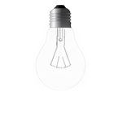

The Big Switch or D-day
DESCRIPTION
Make it fun.
INSTRUCTIONS

Build a simple HTML page that uses a few elements that could be used to build a toggle switch.
Style the switch using CSS so that it looks convincing.
Incorporate some sort of CSS transform, transition effect or a simple CSS animation to some part of the switch.
Employ one or more jQuery effects to some aspect of the user interface.
Have fun.
Turn on the light to see the instructions better ▶
Turn on the engine to start the D-day show ▶